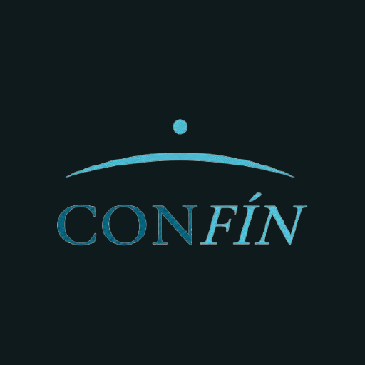

Una nueva forma de conectar a los viajeros con los establecimientos que hacen único a San Martín de los Andes.
CONFÍN nace en San Martín de los Andes con un objetivo muy simple: reunir en un solo lugar los establecimientos, servicios y experiencias que hacen único al destino, para que cualquier viajero pueda descubrirlos de manera fácil, confiable y directa.
Es una plataforma privada, desarrollada íntegramente para San Martín de los Andes, con la visión de expandirse progresivamente hacia otros destinos de la región.
CONFÍN incorpora a Luna, una asistente inteligente especializada exclusivamente en turismo de San Martín de los Andes. Los viajeros pueden conversar con ella en español, inglés y portugués.
Luna responde consultas sobre establecimientos, servicios y experiencias, guiando a cada visitante según sus intereses y mostrando únicamente información verificada dentro del ecosistema CONFÍN.
Es como contar con una recepcionista multilingüe disponible las 24 horas.
Cada establecimiento es incorporado de manera manual. Priorizamos propuestas reales, información confiable y contacto directo con cada prestador.
No buscamos cantidad.
Buscamos confianza.
Los establecimientos que acompañen a CONFÍN desde su nacimiento recibirán el Sello Pionero CONFÍN, una distinción permanente que identifica a quienes apostaron por este proyecto desde sus primeros pasos.
En el caso de los rentals y actividades de temporada, el sello estará disponible para quienes se suscriban antes del 8 de agosto, fecha de lanzamiento de la plataforma.
Los rentals cuentan con una modalidad especialmente diseñada para este tipo de actividad.
Porque vas a formar parte de la primera generación de establecimientos de CONFÍN. Quienes se incorporan desde el inicio no solo obtienen mayor visibilidad desde el lanzamiento, sino que también acompañan el crecimiento de una plataforma nacida en San Martín de los Andes con proyección regional.
El proceso de alta demora menos de cinco minutos.